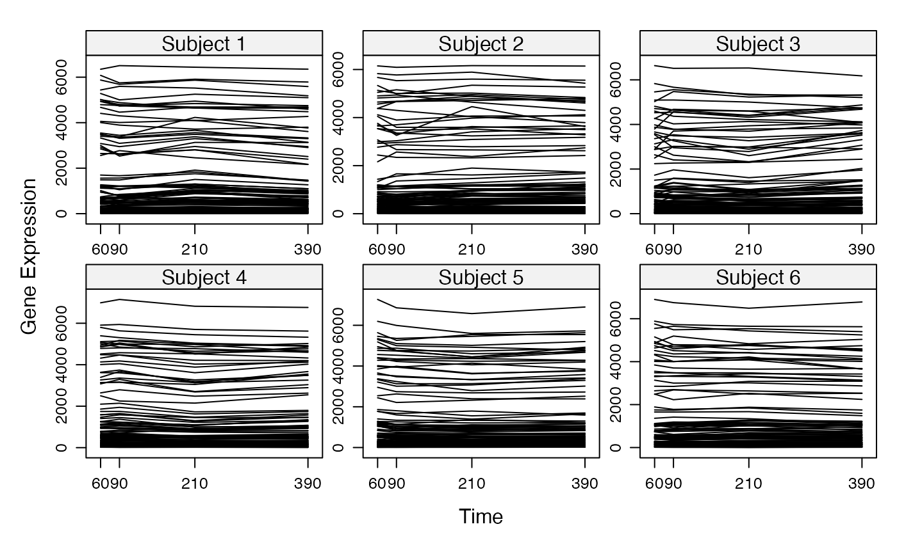

Considering the class of the argument which is passed to plot, the graphical output differs.
# S4 method for micro_array,ANY plot(x, y, ...) # S4 method for network,ANY plot( x, y, choice = "network", nv = 0, gr = NULL, ini = NULL, color.vertex = NULL, color.edge = NULL, video = TRUE, weight.node = NULL, ani = FALSE, size = c(2000, 1000), label_v = 1:dim(x@network)[1], horiz = TRUE, legend.position = "topleft", frame.color = "black", label.hub = FALSE, nround = 2, ani.img.name = "Rplot", ani.imgdir = "images", ani.htmlfile = "index.html", outdir, ani.group.legend = "Cluster", layout = ini, alpha = 1, pixmap.color = terrain.colors(20), ... ) # S4 method for micropredict,ANY plot( x, time = NULL, label_v = NULL, frame.color = "white", ini = NULL, label.hub = FALSE, edge.arrow.size = 0.7, edge.thickness = 1 )
| x | a micro\_array object, a network object or a micropredict object |
|---|---|
| y | optional and not used if x is an appropriate structure |
| ... | additional parameters |
| choice | what graphic should be plotted: either "F" (for a representation of the matrices F) or "network". |
| nv | the level of cutoff. Defaut to `0`. |
| gr | a vector giving the group of each gene |
| ini | using the ``position'' function, you can fix the position of the nodes. |
| color.vertex | a vector defining the color of the vertex. |
| color.edge | color of the edges |
| video | if ani is TRUE and video is TRUE, the result of the animation is saved as an animated GIF. |
| weight.node | nodes weighting. Defaults to `NULL`. |
| ani | animated plot? |
| size | vector giving the size of the plot. Default to `c(2000,1000)`. |
| label_v | vector defining the vertex labels. |
| horiz | landscape? Defaults to `TRUE`. |
| legend.position | position of the legend. |
| frame.color | color of the frames. |
| label.hub | logical ; if TRUE only the hubs are labeled. |
| nround | number of digits to display |
| ani.img.name | name of image file for animations |
| ani.imgdir | name of the image directory for animations |
| ani.htmlfile | name of the html file for animations |
| outdir | name of the outdir for animations |
| ani.group.legend | legend for animations |
| layout | layout of the graphs |
| alpha | transparency of the graphs |
| pixmap.color | color for pixmap graphs |
| time | sets the time for plot of the prediction. Defaults to `NULL` |
| edge.arrow.size | size of the arrows ; default to 0.7. |
| edge.thickness | edge thickness ; default to 1. |
a micro\_array object
a vector of cutoff at which the network should be shown
a network object
Optionnal arguments:
a vector giving the group of each gene
what graphic should be plotted: either "F" (for a representation of the matrices F) or "network".
the level of cutoff. Defaut to 0.
using the ``position'' function, you can fix the position of the nodes
a vector defining the color of the vertex
vector giving the size of the plot. Default to c(2000,1000). The animation can only be created in the working directory. See the help page of the animation method.
if ani is TRUE and video is TRUE, the animation result is a GIF video
vector defining the vertex labels
position of the legend
color of the frames
logical ; if TRUE only the hubs are labeled
size of the arrows ; default to 0.7
edge thickness ; default to 1.
a micropredict object
Optionnal arguments: see plot for network
Bertrand Frederic, Myriam Maumy-Bertrand.
if(require(CascadeData)){ data(micro_US, package="CascadeData") micro_US<-as.micro_array(micro_US[1:100,],time=c(60,90,210,390),subject=6) plot(micro_US) }